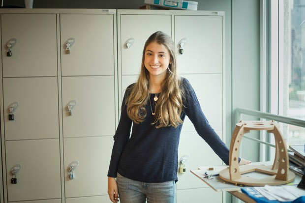
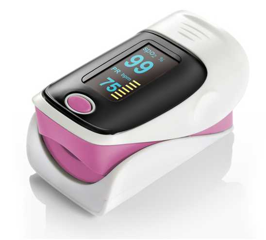

Milena Maluli

Informações Gerais :
-
Sempre morei em São Paulo, cidade repleta de opções para seguir como carreira. Me interesso muito por Física e Química além de gostar de matemática e de Biologia. Esses gostos me levaram a cursar faculdade de Engenharia Mecânica, pois envolver tecnologia e permite uma especialização na área de Bioengenharia. A faculdade que escolhi foi o Insper, que me atraiu pela grade curricular e por ter uma parceria com o Hospital Albert Einstein. Gosto muito do curso e estou muito feliz com as minhas escolhas.
Interesses:
-
Me interesso muito pela área de Bioengenharia. As inovações na área de saúde estão evoluindo cada vez mais e rapidamente. O sistema de saúde brasileiro ainda é precário e precisa acompanhar esse desenvolvimento. Um dos meus objetivos é a criação de aparelhos que agilizem os processos de atendimento em hospitais, que mecanizem ou facilitem exames e analises, para ajudar na melhora da saúde no Brasil. Um exemplo de aparelho existente é o Oxímetro, que mede a oxidação do sangue rapidamente em um aparelho pequeno. Me interesso muito por esses equipamentos e desejo ser capaz de construí-los.

Curiosidades:
-
Estou participando de um projeto chamado Hackathon. Consiste em conhecer várias áreas do Hospital Albert Einstein para tentar encontrar um problema e propor uma solução inovadora. O projeto ainda está em andamento permitindo-me conhecer melhor a organização de um hospital de alto nível e a variedade de máquinas utilizadas no Brasil.